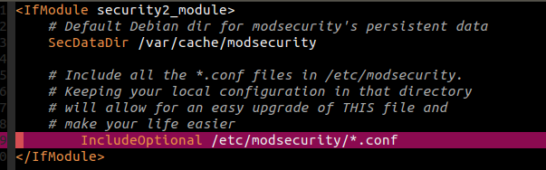
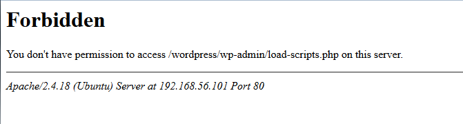
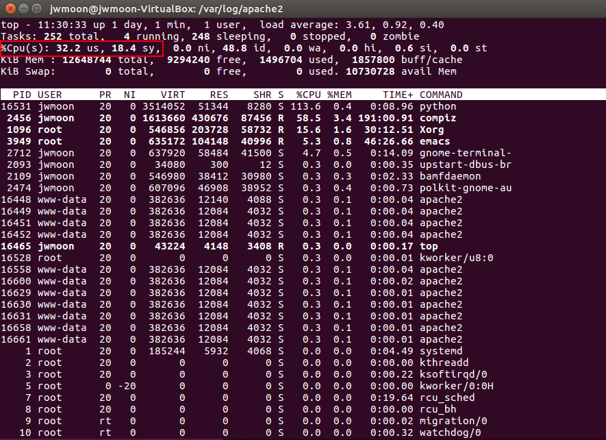

CVE-2018-6389 Apache ModSecurity 를 사용한 대응
Table of Contents
1 개요
- 스크립트를 사용한 대응 방법은 두 가지 단점이 존재
- 첫번째는 워드프레스 버전을 업그레이드 할 때마다 패치를 해야한다는 점
- 두번째는 관리자 페이지의 로딩이 느려진다는 점
- 어플리케이션이 아니라 웹서버의 기능을 활용해서 취약점에 대응한다.
- 이 취약점은 수 많은 동일한 요청을 서버가 제한없이 받아들일 때 발생한다.
- 서버측에서 받아들일 요청 수에 제한을 건다면 DOS공격을 막을 수 있을 것이다.
2 적용방법
2.1 ModSecurity 설치
설치환경은 ubuntu 이다.
apt install libapache2-modsecurity mv /etc/modsecurity/modsecurity.conf-recommended /etc/modsecurity/modsecurity.conf
2.2 Apache에서 modsecurity를 사용하도록 설정
/etc/apache2/mods-enabled/security2.conf 파일이 다음과 같이 되어 있는지 확인한다.
IncludeOptional /etc/modesecurity/*.conf 가 없다면 추가한다.

2.3 Apache 재구동
위의 과정에 문제가 없었다면 아파치를 재구동한다.
service apache2 restart
2.4 ModSecurity 동작 여부 확인
- security2 모듈이 동작중인지 확인한다.
sudo apachectl -M | grep --color security2
- ModSecurity 의 감사로그 생성 확인
/var/log/apache2/modsec_audit.log 파일이 생성되었는지 확인한다.
2.5 Rule 추가
ModSecurity 설치에 이상이 없었다면 다음 룰을 /etc/modsecurity/modsecurity.conf 에 추가한다.
SecRule REQUEST_URI "@rx (?i:/wp-admin/load-scripts.php?.*?(load%5B%5D|load\[\]|load%5B\]|load\[%5D)=([^&,]*,){20,})" "id:1,msg:'Potential use of CVE-2018-6389',deny"
이 룰이 의미하는 것은 20개이상의 자바스크립트 로드 요청을 금지하는 것이다.
이번 취약점은 파라메터에 181개의 자바스크립트 이름을 적어서 보내는 DOS 공격이었다.
따라서 그 수를 20개미만으로 제한한다면 공격을 막는데 유효할 것이다.
아래는 동일한 방법으로 스타일시트 로드도 20개 미만으로 제한하는 룰이다. 이 룰도 추가한다.
SecRule REQUEST_URI "@rx (?i:/wp-admin/load-styles.php?.*?(load%5B%5D|load\[\]|load%5B\]|load\[%5D)=([^&,]*,){20,})" "id:2,msg:'Potential use of CVE-2018-6389',deny"
2.6 Apache 재구동
룰을 적용하기 위해 다시 한번 아파치를 재구동한다.
service apache2 restart
3 결과
3.1 20개 이상의 자바스크립트 로드 요청 테스트
http://192.168.56.101/wordpress/wp-admin/load-scripts.php?c=1&load[]=1,2,3,4,5,6,7,8,9,10,11,12,13,14,15,16,17,18,19,20,21 요청을 보냈을 때의 서버측 응답은 다음과 같다. 403 Forbidden 응답이 출력된 것을 확인할 수 있다.

Figure 2: 서버측 응답
ModSecurity 감사로그는 다음과 같다. CVE-2018-6389 가능성이 있다는 로그를 확인할 수 있다.

Figure 3: 감사로그
3.2 DOS 공격 테스트 툴(doser.py)로 테스트
POC에서 사용했던 툴을 사용해서 테스트해본다.
python doser.py -g 'http://192.168.56.101/wordpress/load-scripts.php?c=1&load%5B%5D=eutil,common,wp-a11y,sack,quicktag,colorpicker,editor,wp-fullscreen-stu,wp-ajax-response,wp-api-request,wp-pointer,autosave,heartbeat,wp-auth-check,wp-lists,prototype,scriptaculous-root,scriptaculous-builder,scriptaculous-dragdrop,scriptaculous-effects,scriptaculous-slider,scriptaculous-sound,scriptaculous-controls,scriptaculous,cropper,jquery,jquery-core,jquery-migrate,jquery-ui-core,jquery-effects-core,jquery-effects-blind,jquery-effects-bounce,jquery-effects-clip,jquery-effects-drop,jquery-effects-explode,jquery-effects-fade,jquery-effects-fold,jquery-effects-highlight,jquery-effects-puff,jquery-effects-pulsate,jquery-effects-scale,jquery-effects-shake,jquery-effects-size,jquery-effects-slide,jquery-effects-transfer,jquery-ui-accordion,jquery-ui-autocomplete,jquery-ui-button,jquery-ui-datepicker,jquery-ui-dialog,jquery-ui-draggable,jquery-ui-droppable,jquery-ui-menu,jquery-ui-mouse,jquery-ui-position,jquery-ui-progressbar,jquery-ui-resizable,jquery-ui-selectable,jquery-ui-selectmenu,jquery-ui-slider,jquery-ui-sortable,jquery-ui-spinner,jquery-ui-tabs,jquery-ui-tooltip,jquery-ui-widget,jquery-form,jquery-color,schedule,jquery-query,jquery-serialize-object,jquery-hotkeys,jquery-table-hotkeys,jquery-touch-punch,suggest,imagesloaded,masonry,jquery-masonry,thickbox,jcrop,swfobject,moxiejs,plupload,plupload-handlers,wp-plupload,swfupload,swfupload-all,swfupload-handlers,comment-repl,json2,underscore,backbone,wp-util,wp-sanitize,wp-backbone,revisions,imgareaselect,mediaelement,mediaelement-core,mediaelement-migrat,mediaelement-vimeo,wp-mediaelement,wp-codemirror,csslint,jshint,esprima,jsonlint,htmlhint,htmlhint-kses,code-editor,wp-theme-plugin-editor,wp-playlist,zxcvbn-async,password-strength-meter,user-profile,language-chooser,user-suggest,admin-ba,wplink,wpdialogs,word-coun,media-upload,hoverIntent,customize-base,customize-loader,customize-preview,customize-models,customize-views,customize-controls,customize-selective-refresh,customize-widgets,customize-preview-widgets,customize-nav-menus,customize-preview-nav-menus,wp-custom-header,accordion,shortcode,media-models,wp-embe,media-views,media-editor,media-audiovideo,mce-view,wp-api,admin-tags,admin-comments,xfn,postbox,tags-box,tags-suggest,post,editor-expand,link,comment,admin-gallery,admin-widgets,media-widgets,media-audio-widget,media-image-widget,media-gallery-widget,media-video-widget,text-widgets,custom-html-widgets,theme,inline-edit-post,inline-edit-tax,plugin-install,updates,farbtastic,iris,wp-color-picker,dashboard,list-revision,media-grid,media,image-edit,set-post-thumbnail,nav-menu,custom-header,custom-background,media-gallery,svg-painter' -t 9999
결과는 다음과 같다.

다소 CPU 사용량이 올라갔지만 예전처럼 100%에 가깝게 올라가는 것은 아니므로 서비스에는 문제가 없는 수준이었다.
따라서 ModSecurity 를 이용한 방법은 본 취약점(CVE-2018-6389)를 방어하는데 효과적이라고 판단된다.